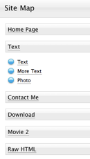

Site Map
A Site Map lists all the pages of a site. This is useful for more complex sites to aid visitors in finding the page they want.
The site map for a small site.
Note: Site Map pages are unrelated to Google Sitemaps. Sandvox Pro offers integration with Google Sitemaps.
Ways to add a Site Map to a site:
Settings
To edit a Site Map:
- Select it in the Site Outline.
- Open the Page Inspector. The top half contains general page attributes; the bottom holds settings specific to the Site Map as listed below.
Top-level pages as main sections
Normally the main pages are displayed as "children" of the Home Page. With this setting checked, some of that hierarchy is removed like so:

Include home page
Whether to include the Home Page in the Site Map.
Compact layout
If space is tight, you can use this setting to compact the Site Map layout. Suitable pages are placed side-by-side in the Site Map rather than vertically like so: